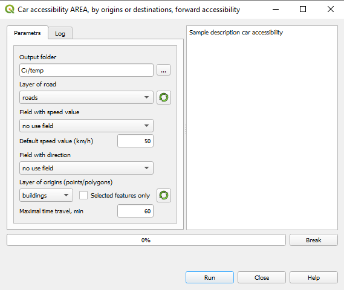

8. Сar accessibility¶
8.1. The necessary datasets¶
Car accessibility demands two layers of the current QGIS project:
Topologically correct layer of roads that must be opened in the current QGIS project.
The layer of buildings that must be opened in the current QGIS project.
Note
The car accessibility is computed for the fixed start (forward) or arrival (backward) time.
8.2. The computation steps¶
Choose the AREA or MAP regime and Forward or Backward accessibility option
The dialog for establishing parameters is opened (MAKE DIFFERENT IMAGES FOR THE AREA AND MAP REGIMES):
Setup the folder for storing the results of computations
Most of the parameters are common for the AREA and MAP regimes
Output folder: The folder to store the results of the computations.
Roads layer: The layer of roads that was used for building accessibility dictionary.
Average car speed field: The field of the layer of roads that contains the average car speed.
Default car speed value: Default speed value, will be used for the roads that are not listed in the table of speeds (see below).
Traffic direction field: The field on layer of roads that contains traffic direction.
Currently, the traffic direction is denoted using the OSM notation:B: Two-way linkF: One-way link, driving is allowed along the direction of the link drawingT: One-way link, driving is allowed against the direction of the link drawingBuildings of origins (forward) or Buildings of destinations (backward): The title of this item depends on the choice of the Forward or Backward options.
For computing forward accessibility you must define the buildings where the trip starts.For computing backward accessibility you must define the buildings where the trip ends.We recommend to prepare origin or destination buildings as separate layers and carefully check these layers before running the calculations that may take time. Yet you have a faster “selected only” option.Maximum travel time: Travel time cutoff. Trips that take longer time will not be considered.
For the MAP regime, the fields that contain the characterisitcs to aggregate must be selected
Aggregate:
If not checked, the total number of buildings that can be accessible in a given time will be calculated.If checked, one or more attributes of the buildings layer that represent buildin’s capacity must be selected.For example, to assess accessibility to jobs, the field that contains number of jobs in a building must be chosen.There can be several attributes each containing the number of jobs of a certain kind in a building. You could choose several cattributes to aggregate and calculate accessibility to jobs of each kind.The fields to aggregate: The names of fields for aggregation (FA1, FA2, …).
Time bin for storing the results: The time bin for storing accessibility computation results. The default bin is 5 minutes that is, assessing accessibility to jobs, you will get the number of jobs accessible in 5, 10, 15, … minute trips, up to a Maximum travel time.
The 2- or even 1-minute bin can be useful for further analysis of the accessibility computation results (see LINK).
4. Click Run to start. The progressbar shows the progress of the computations. The Log tab contains metadata about the results. You can break the computations by pressing Break.
In case the computations were based on the selection of buildings, the results will contain these buildings as a separate layer.
Note
If more that 10 buildings are selected for AREA calculations, you wll be warned that the output table may become very large.
8.3. Car speed for accessibility computation¶
We assume that this speed is defined by the type of the road - a highway, major city street, neighborhood secondary street, etc. The average speed for every road type is provided by a user-defined table of average speeds by the road type.
The speeds are stored in the csv table user_home_folder/taunetcalc_type_road.csv that has three fields seq, type_road, speed_default.
| The type_road field contains the OSM road type and the speed_default field the average speed for this type
The taunetcalc_type_road.csv table supplied with the plugin is city-oriented:
Type of road |
Default speed value, km/h |
busway |
18 |
cycleway |
15 |
footway |
3 |
living_street |
20 |
motorway |
60 |
motorway_link |
40 |
… |
… |
In case the layer of roads conains the type that is not listed in the taunetcalc_type_road.csv, the Default speed value is used.
8.4. The structure of the output¶
Mode Forward AREA
Attribute |
Value |
|---|---|
Origin_ID |
|
Destination_ID |
|
Duration |
Mode Backward AREA
Attribute |
Value |
|---|---|
Destination_ID |
|
Origin_ID |
|
Duration |
Mode Forward/Backward MAP
Attribute |
Value |
|---|---|
Origin_ID |
|
Time_intervaln |
|
Value_aggrn |
|
Totaln |